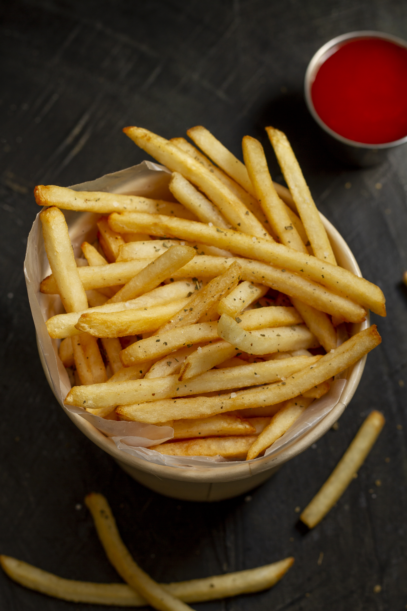

The recipe for traditional chips is essentially a method of transforming raw, starchy potatoes into savory sides that feature a distinct contrast in texture: a crisp, golden exterior and a soft, fluffy interior. The process centers on moisture control. It begins with slicing potatoes into thick batons and soaking them to draw out excess surface starch, which ensures the chips do not stick together or burn prematurely. The cooking philosophy relies on a "double-cook" technique. The potatoes are first poached gently in oil to cook the inside without browning, allowed to cool, and then fried a second time at a high temperature. This second immersion shocks the exterior, creating the signature "crunch" and golden color associated with the perfect chip, finally seasoned simply with salt while still hot.
link to the home page
home